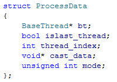

ProcessData

This struct contains framework threading information.
Usually Effex fills these for you to read out during evaluation of custom plugin nodes.
BaseThread* bt
The currently used BaseThread. Can be nullptr.
bool islast_thread
true if this is the last thread. Imagine 8 cpu threads running while the 8th thread would be the last one.
It is NOT the last one being executed though!
int thread_index
The current thread index.
void* cast_data
Custom thread data. Can be nullptr.
unsigned int mode
A custom mode variable. Usually this is used to let you identify if this thread is operating on grids or particles.